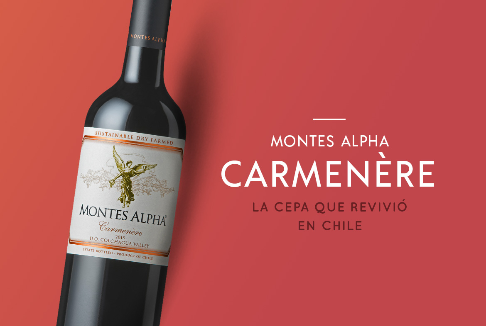

Vino Carmenere
Cepa emblemática de Chile, reconocida por su sabor intenso y aroma frutal.

Cabernet Sauvignon
Uno de los vinos más exportados del país, ideal para acompañar carnes.

Cerveza Artesanal
En el sur de Chile destacan las cervezas artesanales de gran calidad.
Pisco
Destilado tradicional de uva, base del famoso pisco sour chileno.